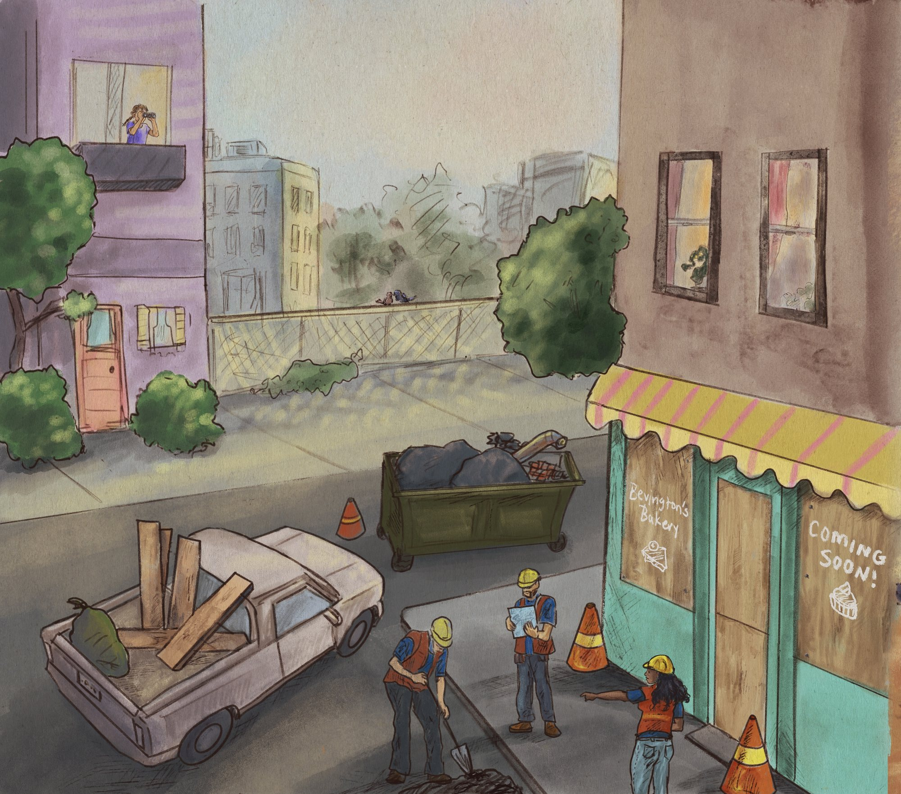
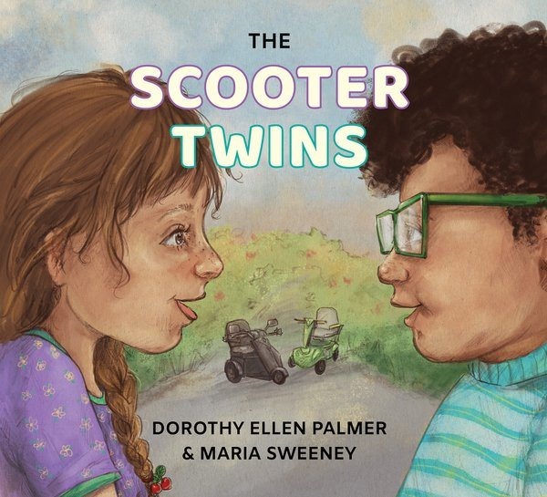
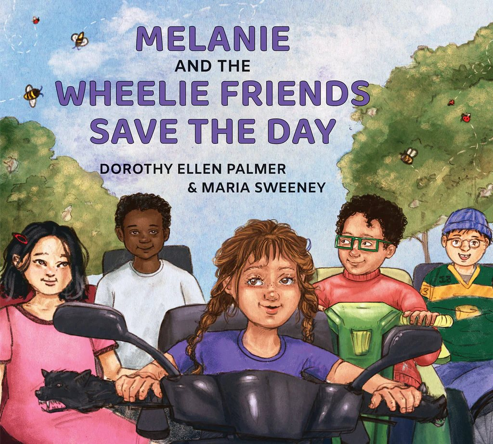
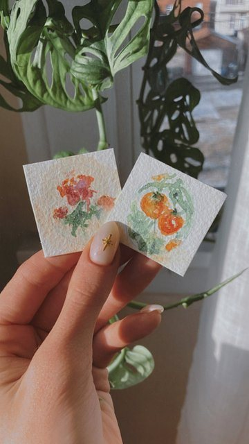
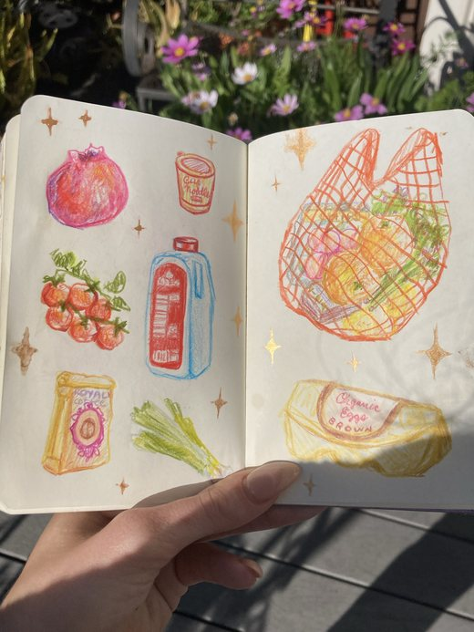
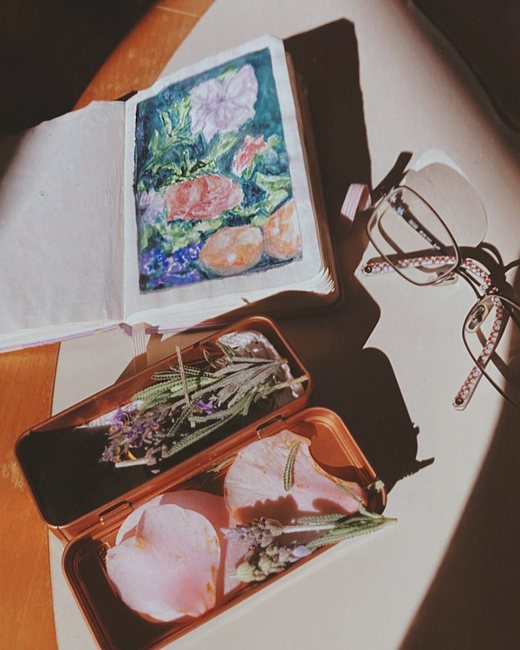

Books & illustration
Watercolour and digital illustration for published books: a graphic memoir of my own, and picture books about kids who move through the world on wheels.
Drag the page to turn
Brittle Joints
An evocative graphic memoir documenting my real-life experience navigating chronic pain, inaccessible spaces, and the healthcare system while living with Bruck syndrome.
- Role
- Author & illustrator
- Medium
- Watercolour and digital
- Publisher
- Street Noise Books, June 2024
- 2025 Eisner Award nominee, Best Writer/Artist
- New York Public Library Top 10 Graphic Novel of 2024
- Starred reviews

Interior spread · watercolour and digital

The Scooter Twins
The Scooter Twins series · Book one
Written by disability advocate and mobility scooter user Dorothy Ellen Palmer, and illustrated by Maria Sweeney, The Scooter Twins is a story that shares the joys and challenges of disabled childhood, and offers many kids who get new wheels the opportunity to find themselves in the pages of a book.
- Role
- Illustrator · words by Dorothy Ellen Palmer
- Medium
- Watercolour and digital
- Publisher
- Groundwood Books, 2023
- Hamilton Literary Awards, 2025

Forthcoming 2026Cover · watercolour and digital
Melanie and the Wheelie Friends Save the Day
The Scooter Twins series · Book two
The second book in the series, out in 2026. A first look at the interior spreads.
- Role
- Illustrator · words by Dorothy Ellen Palmer
- Medium
- Watercolour and digital
- Publisher
- Groundwood Books, 2026
Other illustration & painting
Commissions and personal work outside the books.


